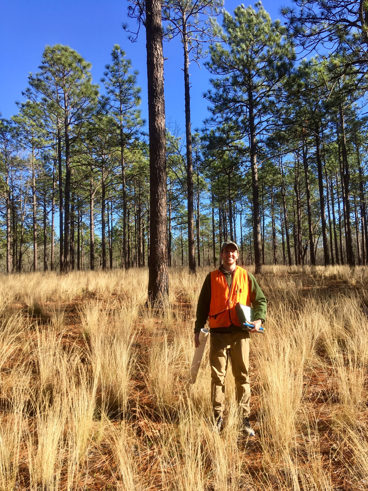

I am a Ph.D. student working with Dr. Paul Knapp in the Carolina Tree-Ring Science Laboratory at the University of North Carolina at Greensboro. I received my master's degree from UNC-Greensboro in 2019 and my bachelor's degree from the University of West Florida in 2017.
In general, I use tree-ring data to analyze historic variability in climate and weather. I am particularly interested in extracting specific precipitation data (e.g., convective, frontal, tropical) from tree rings. I am also interested in ocean--atmosphere interactions still.
A list of publications is available by visiting either my Google Scholar or ORCID profile.